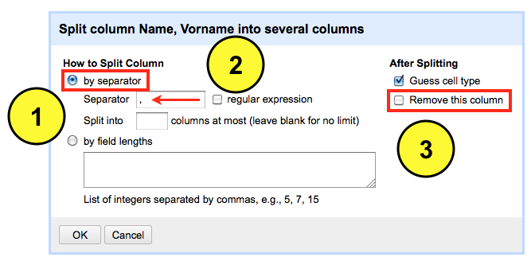
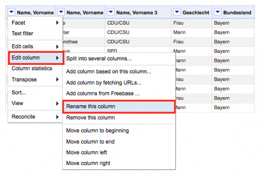
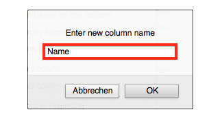

Ein strukturierter Datensatz, der den eigenen Bedürfnissen entspricht, ist recht selten anzutreffen. Daher ist die Transformation der Daten in die gewünschte Form unvermeidbar. Mit OpenRefine lassen sich die Daten dennoch bändigen. Die Herangehensweise erkläre ich wie immer anhand meines manipulierten Datensatzes, der hier heruntergeladen werden kann. Ich werde den Datensatz, der Informationen über die Mitglieder des Bundestages (MdB) enthält, etwas umgestalten.
So sieht mein Plan aus – ich will die Informationen aus der Spalte "Name, Vorname" zergliedern. Genau genommen beabsichtige ich den Namen, Vornamen und Partei jedes Abgeordneten in eine separate Spalte überführen.
Nachdem ich die Daten importiert habe, wähle ich das Dropdown Menü der Spalte "Name, Vorname" aus. Dabei fahre ich mit der Maus über den Menüpunkt Edit column und wähle im rechten Seitenmenü die Option Split into several columns aus.
Ein neues Menüfenster öffnet sich. Hier muss ich definieren wie OpenRefine die Datenzeile zergliedern soll. Ich kann hier zwischen zwei Optionen wählen – by separater und by field lenghts. Wer sich den Datensatz und insbesondere die Spalte "Name, Vorname" angeguckt hat, dem ist vielleicht aufgefallen, dass die einzelnen Informationsbrocken Name, Vorname und Partei durch ein Komma getrennt sind. Dieses gemeinsame Merkmal, das über alle Datenzeilen hinweg existiert, will ich mir zunutze machen. Daher wähle ich die Option by separater aus. Wenn ein anderes Zeichen die Informationen trennt, muss man in der Zeile unterhalb das entsprechende Zeichen anpassen. Da ich die Spalte "Name, Vorname" nach der Transformation nicht löschen will, entferne ich auf der rechten Seite das Häkchen Remove this column. OK klicken.

Drei neue Spalten sind das Ergebnis der Transformation. Jetzt passe ich noch den Namen der Spalte an. Dazu fahre ich mit der Maus über das Dropdown Menü der Spalte "Name, Vorname" zum Menüpunkt edit column und wähle dort die Option rename this column aus.

Hier editiere ich den Namen und bestätige die Eingabe mit OK. Die anderen zwei Spalten werden ebenso angepasst.
